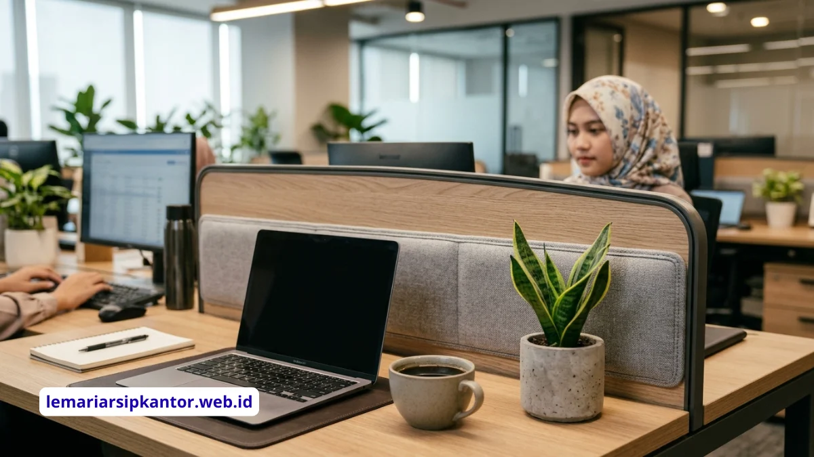

Apa Itu Meja Kerja Sekat Minimalis?
Meja kerja sekat minimalis adalah meja kerja yang dilengkapi panel pembatas rendah antar pengguna, dirancang dengan garis desain sederhana tanpa ornamen berlebih.
Konsep ini banyak dipakai kantor modern karena mendukung efisiensi ruang sekaligus tetap menjaga privasi kerja masing-masing staf.
Secara umum, konsep minimalis pada meja sekat menekankan pada bentuk fungsional, warna netral, dan material yang tidak memakan banyak ruang visual maupun fisik.
Panel sekat biasanya tidak dibuat terlalu tinggi agar ruangan tetap terasa lapang dan pencahayaan alami dapat menyebar ke seluruh area kerja.
Konsep ini berbeda dengan meja kerja individual konvensional maupun bilik kerja tertutup (cubicle tinggi) yang lebih menonjolkan privasi penuh namun cenderung memakan ruang dan kesan kaku pada tata ruang kantor.
Mengapa Kantor Modern Memilih Meja Kerja Sekat Minimalis?
Kantor modern umumnya memilih meja kerja sekat minimalis karena kombinasi antara efisiensi ruang, kemudahan komunikasi antar staf, dan biaya pengadaan yang relatif lebih terjangkau dibanding sekat tinggi.
Beberapa alasan yang umum melatarbelakangi pilihan ini:
- Ruang kantor di kota besar cenderung terbatas, sehingga tata letak yang hemat ruang menjadi prioritas.
- Model sekat rendah tetap memungkinkan supervisor memantau area kerja tanpa harus berpindah tempat.
- Desain minimalis lebih mudah dipadukan dengan gaya interior kantor apa pun, dari korporat formal hingga startup kasual.
- Perawatan dan pembersihan area kerja menjadi lebih mudah karena struktur yang sederhana.
Meski demikian, tingkat privasi yang dihasilkan tetap lebih rendah dibanding bilik kerja tertutup, sehingga pemilihannya perlu disesuaikan dengan jenis pekerjaan staf, apakah membutuhkan konsentrasi tinggi atau kolaborasi intensif.

Model Apa Saja yang Termasuk Meja Kerja Sekat Minimalis?
Model meja kerja sekat minimalis umumnya terbagi menjadi tipe lurus, tipe berhadapan, dan tipe cluster, yang masing-masing memiliki karakteristik dan kecocokan ruang berbeda.
Model Lurus (Single Line)
Model ini menempatkan beberapa meja berjajar dalam satu garis lurus dengan sekat di antara setiap pengguna.
Cocok untuk ruang memanjang atau lorong kerja yang tidak terlalu lebar. Model lurus umumnya lebih mudah diatur karena tidak membutuhkan perhitungan sudut ruangan yang rumit.
Model Berhadapan (Double Facing)
Dua baris meja disusun saling berhadapan dengan sekat rendah di tengah sebagai pembatas pandangan langsung.
Model ini efisien untuk memaksimalkan kapasitas staf dalam satu blok ruang, sekaligus tetap memberi jarak visual yang cukup untuk fokus bekerja.
Model Cluster (L atau U)
Beberapa meja disusun membentuk formasi L atau U yang mengelompokkan beberapa staf dalam satu unit kerja.
Model ini umumnya dipilih untuk tim yang sering berkolaborasi namun tetap membutuhkan area kerja pribadi masing-masing.
Bagaimana Cara Memilih Model yang Tepat untuk Ruang Terbatas?
Cara memilih model meja kerja sekat minimalis untuk ruang terbatas adalah dengan mengukur luas ruangan terlebih dahulu, menentukan jumlah staf, lalu memilih formasi yang memaksimalkan jalur sirkulasi tanpa mengorbankan kenyamanan gerak.
Langkah praktis yang umum dilakukan:
- Ukur luas ruang kerja yang tersedia, termasuk jalur akses masuk dan keluar.
- Tentukan jumlah staf yang akan menempati area tersebut.
- Pilih formasi lurus untuk ruang sempit memanjang, atau cluster untuk ruang persegi yang lebih luas.
- Sisakan jalur sirkulasi minimal agar staf dapat bergerak nyaman tanpa berdesakan.
- Sesuaikan tinggi sekat dengan kebutuhan privasi dan pencahayaan ruangan.
Ruang yang sangat terbatas umumnya lebih diuntungkan dengan model lurus atau berhadapan karena tidak membutuhkan ruang gerak tambahan seperti pada formasi cluster berukuran besar.
Material dan Finishing Apa yang Umum Digunakan?
Material yang umum digunakan pada meja kerja sekat minimalis adalah particle board atau MDF dengan lapisan melamin atau HPL, dipadukan rangka kaki besi untuk menopang struktur secara kokoh namun tetap ringan secara visual.
Beberapa pertimbangan material yang relevan:
- Particle board dan MDF dipilih karena bobotnya lebih ringan dan harganya relatif terjangkau dibanding kayu solid.
- Finishing melamin atau HPL memberikan permukaan yang tahan gores dan mudah dibersihkan untuk penggunaan harian di kantor.
- Rangka kaki besi memberikan kesan minimalis modern sekaligus menopang beban meja secara stabil.
- Panel sekat biasanya menggunakan material yang sama dengan permukaan meja, atau kombinasi dengan bahan akustik untuk meredam suara pada ruang kerja padat.
Berapa Ukuran Ideal Meja Kerja Sekat untuk Staf?
Ukuran ideal meja kerja sekat untuk staf umumnya disesuaikan dengan jenis pekerjaan dan peralatan yang digunakan, dengan mempertimbangkan ruang gerak kaki, posisi layar, dan jarak antar pengguna.
Secara umum, pertimbangan ukuran mencakup:
- Lebar meja perlu cukup untuk menampung perangkat kerja utama seperti komputer dan dokumen kerja.
- Kedalaman meja disesuaikan agar posisi duduk tetap ergonomis dan tidak terlalu dekat dengan layar.
- Tinggi sekat sebaiknya cukup untuk memberi batas visual dasar tanpa menghalangi pencahayaan ruangan secara signifikan.
Kesalahan Umum Saat Memilih Meja Kerja Sekat Minimalis
Kesalahan umum yang sering terjadi adalah memilih ukuran meja tanpa mempertimbangkan jalur sirkulasi, serta mengabaikan kebutuhan pencahayaan akibat sekat yang terlalu tinggi.
- Memaksakan jumlah unit meja melebihi kapasitas ruang sehingga mengurangi kenyamanan gerak staf.
- Memilih material tanpa mempertimbangkan ketahanan terhadap penggunaan intensif harian.
- Mengabaikan kebutuhan kabel manajemen untuk perangkat elektronik di meja kerja.
- Tidak menyesuaikan model dengan pola kerja tim, misalnya memilih sekat tinggi untuk tim yang membutuhkan kolaborasi intensif.
Berapa Kisaran Biaya Pengadaan Meja Kerja Sekat Minimalis?
Biaya pengadaan meja kerja sekat minimalis umumnya dipengaruhi oleh jenis material, tinggi partisi, dan jumlah unit yang dipesan, sehingga kisarannya dapat bervariasi cukup luas antar penyedia furnitur kantor.
- Jenis material dasar, misalnya particle board umumnya lebih terjangkau dibanding MDF berkualitas tinggi.
- Jenis finishing permukaan, di mana HPL cenderung sedikit lebih mahal dibanding melamin standar namun lebih tahan lama.
- Tambahan fitur seperti kabel manajemen, laci penyimpanan, atau panel akustik pada bagian sekat.
- Jumlah unit yang dipesan, karena pembelian dalam jumlah besar umumnya mendapatkan penyesuaian harga per unit dari penyedia.
- Biaya pengiriman dan pemasangan yang dapat berbeda tergantung lokasi dan kompleksitas tata letak ruangan.
Kesimpulan
Meja kerja sekat minimalis menjadi pilihan yang relevan bagi kantor yang ingin menyeimbangkan efisiensi ruang, privasi dasar, dan estetika modern.
Pemilihan model sebaiknya disesuaikan dengan luas ruangan, jumlah staf, dan pola kerja tim agar hasil akhirnya benar-benar mendukung produktivitas harian.
PERTANYAAN YANG SERING DIAJUKAN (FAQ)

BUDI SANTOSO
Spesialis Penataan Arsip & Keamanan Kantor dengan pengalaman lebih dari 10 tahun mendampingi ratusan perusahaan dalam mendesain ruang penyimpanan yang optimal dan terlindungi.